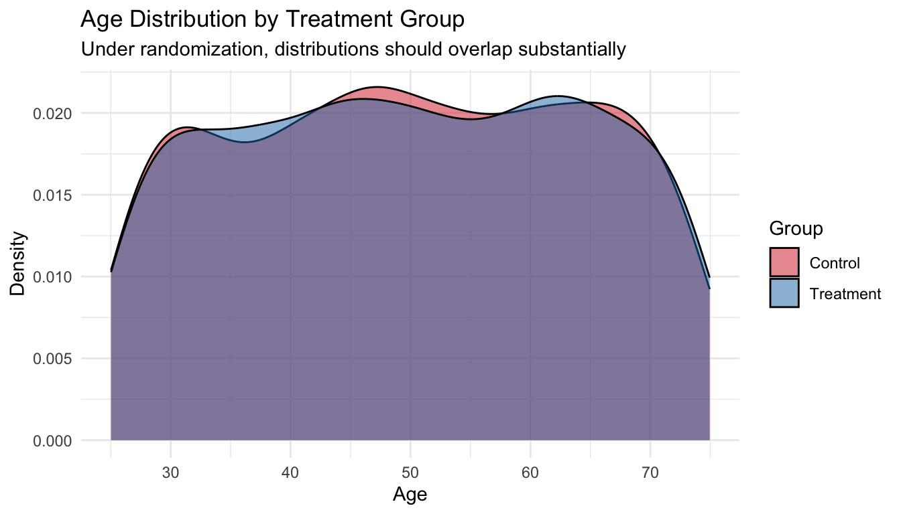
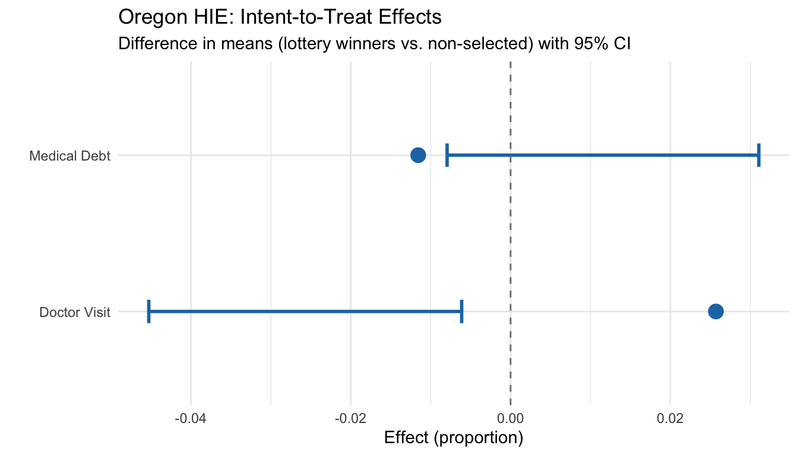

2 Randomized Controlled Trials
Class materials
Slides: Module 2
Textbook Reading
Hernán & Robins, Causal Inference: What If – Chapters 1–2
Supplementary Reading
- Medical Research Council. (1948) “Streptomycin Treatment of Pulmonary Tuberculosis.” BMJ, 2(4582):769–782.
- Finkelstein A, et al. (2012) “The Oregon Health Insurance Experiment: Evidence from the First Year.” QJE, 127(3):1057–1106.
Topics Covered
- Why randomization solves the selection bias problem
- Simulating a randomized experiment
- Estimating the Average Treatment Effect from an RCT
- Confidence intervals and uncertainty
- Statistical vs. clinical significance
2.1 Review: The Selection Bias Problem
Last week, we saw that a naive comparison of treated and untreated groups can be misleading when treatment assignment is confounded, meaning that when the characteristics that drive someone to receive treatment also affect the outcome. Today we show why randomization eliminates this problem.
Not all credible studies use researcher-controlled randomization. Sometimes nature provides “as-if random” assignment through lotteries (e.g., the Vietnam draft), arbitrary cutoffs (e.g., the legal drinking age at 21), or geographic boundaries. These quasi-experiments sit between full randomization and pure self-selection on the credibility spectrum. We will formalize these designs later in the course; the OHIE exercise at the end of this page is one such example.
Checklist Items 2-3. As you work through this code, keep two questions in mind: How was treatment assigned? (Item 2) and Is the comparison fair? (Item 3). When treatment is randomized, the answer to both questions is strong, and the code below shows you exactly why.
2.1.1 Quick Demonstration: Confounded vs. Randomized Assignment
We start with a simple comparison. We simulate 2,000 patients where a blood pressure drug truly lowers systolic blood pressure (SBP) by 10 mmHg on average. In the first scenario, sicker patients are more likely to receive the drug (confounded). In the second, treatment is assigned by a coin flip (randomized).
set.seed(42)
n <- 2000
# Covariates
age <- runif(n, 25, 75)
baseline_sbp <- 90 + 0.5 * age + rnorm(n, sd = 10)
# Potential outcomes (true ATE = -10)
y0 <- baseline_sbp + rnorm(n, sd = 5)
y1 <- y0 - 10
# --- Scenario 1: Confounded assignment (sicker patients get drug) ---
prob_treat_conf <- plogis(-2 + 0.03 * age + 0.02 * baseline_sbp)
W_conf <- rbinom(n, 1, prob_treat_conf)
y_conf <- ifelse(W_conf == 1, y1, y0)
naive_conf <- mean(y_conf[W_conf == 1]) - mean(y_conf[W_conf == 0])
# --- Scenario 2: Randomized assignment (coin flip) ---
W_rand <- rbinom(n, 1, 0.5)
y_rand <- ifelse(W_rand == 1, y1, y0)
naive_rand <- mean(y_rand[W_rand == 1]) - mean(y_rand[W_rand == 0])
cat("True ATE:", -10, "\n\n")## True ATE: -10## Confounded assignment:## Estimated ATE (naive): -3.62## Bias: 6.38## Randomized assignment:## Estimated ATE (naive): -9.93## Bias: 0.07Under confounded assignment, the naive estimate is biased because sicker patients received the drug, so the treated group had higher SBP to begin with. Under randomization, the difference in means is close to the true ATE of \(-10\) because the two groups are comparable.
2.2 Simulating a Randomized Experiment
Let’s build a full RCT simulation step by step. We simulate a clinical trial testing whether a new blood pressure drug lowers SBP compared to placebo.
2.2.1 Setting Up the Population
set.seed(2024)
n <- 2000
# Generate patient characteristics
age <- runif(n, 25, 75)
female <- rbinom(n, 1, 0.5)
smoker <- rbinom(n, 1, 0.22)
bmi <- rnorm(n, mean = 27, sd = 4)
diabetes <- rbinom(n, 1, 0.12)
# Baseline SBP depends on covariates
baseline_sbp <- 80 + 0.5 * age + 2 * smoker + 0.3 * bmi +
5 * diabetes + rnorm(n, sd = 8)
df <- data.frame(age, female, smoker, bmi, diabetes, baseline_sbp)
head(df)## age female smoker bmi diabetes baseline_sbp
## 1 66.84713 0 1 27.00611 0 102.0426
## 2 41.04338 1 0 28.14770 0 103.7882
## 3 59.01817 0 0 29.11518 0 117.3457
## 4 59.90866 0 0 26.32628 0 122.8278
## 5 47.85046 0 0 27.66546 0 113.8976
## 6 60.07102 1 0 30.44778 0 126.65792.2.2 Randomization: Treatment Assignment
In an RCT, treatment is assigned independently of patient characteristics. This is the key that ensures exchangeability: \(Y(0), Y(1) \perp W\).
# Simple randomization (coin flip)
df$W <- rbinom(n, 1, 0.5)
cat("Treatment group:", sum(df$W), "patients\n")## Treatment group: 979 patients## Control group: 1021 patients2.2.3 Checking Balance: Does Randomization Work?
A crucial step in evaluating any RCT is checking whether baseline characteristics are balanced across treatment and control groups. This is what Table 1 shows in a published RCT paper.
balance_check <- df %>%
group_by(W) %>%
summarize(
mean_age = mean(age),
pct_female = mean(female) * 100,
pct_smoker = mean(smoker) * 100,
mean_bmi = mean(bmi),
pct_diabetes = mean(diabetes) * 100,
mean_sbp = mean(baseline_sbp),
.groups = "drop"
)
# Format for display
balance_display <- data.frame(
Variable = c("Age (mean)", "Female (%)", "Smoker (%)",
"BMI (mean)", "Diabetes (%)", "Baseline SBP (mean)"),
Control = round(as.numeric(balance_check[balance_check$W == 0, -1]), 1),
Treatment = round(as.numeric(balance_check[balance_check$W == 1, -1]), 1)
)
balance_display$Difference <- balance_display$Treatment - balance_display$Control
knitr::kable(balance_display, caption = "Table 1: Baseline Characteristics by Treatment Group")| Variable | Control | Treatment | Difference |
|---|---|---|---|
| Age (mean) | 50.0 | 50.1 | 0.1 |
| Female (%) | 49.1 | 51.1 | 2.0 |
| Smoker (%) | 22.2 | 22.9 | 0.7 |
| BMI (mean) | 27.0 | 26.9 | -0.1 |
| Diabetes (%) | 13.1 | 12.7 | -0.4 |
| Baseline SBP (mean) | 114.0 | 113.6 | -0.4 |
The differences should be small, not because of any adjustment, but because randomization makes the groups comparable. With 1,000 patients per arm, we expect very good balance.
2.2.4 Visualizing Balance
ggplot(df, aes(x = age, fill = factor(W, labels = c("Control", "Treatment")))) +
geom_density(alpha = 0.5) +
scale_fill_manual(values = c("Control" = "#D62728", "Treatment" = "#1F77B4"),
name = "Group") +
labs(title = "Age Distribution by Treatment Group",
subtitle = "Under randomization, distributions should overlap substantially",
x = "Age", y = "Density") +
theme_minimal()
Checklist Item 3 in practice: When you read an RCT, look at Table 1. If the baseline characteristics are similar across groups, the comparison is likely fair. Large imbalances, especially in a randomized study, suggest something may have gone wrong.
2.3 Estimating the ATE
2.3.1 Generating Outcomes
# True treatment effect: drug lowers SBP by 10 mmHg on average
true_ate <- -10
# Potential outcomes
df$y0 <- baseline_sbp + rnorm(n, sd = 5) # outcome without drug
df$y1 <- df$y0 + true_ate # outcome with drug
# Observed outcome (we only see one per person)
df$y_obs <- ifelse(df$W == 1, df$y1, df$y0)2.3.2 The Simple Estimator: Difference in Means
In an RCT, the ATE is estimated by the difference in sample means. No regression or matching needed.
\[\widehat{ATE} = \bar{Y}_1 - \bar{Y}_0 = \frac{1}{N_1}\sum_{i:W_i=1} Y_i^{obs} - \frac{1}{N_0}\sum_{i:W_i=0} Y_i^{obs}\]
y_bar_1 <- mean(df$y_obs[df$W == 1])
y_bar_0 <- mean(df$y_obs[df$W == 0])
ate_hat <- y_bar_1 - y_bar_0
cat("Mean outcome (Treatment):", round(y_bar_1, 2), "\n")## Mean outcome (Treatment): 103.89## Mean outcome (Control): 113.67## Estimated ATE: -9.78## True ATE: -10## Estimation error: 0.22The estimate is close to the true value of \(-10\). This works because randomization ensures exchangeability: the treated and control groups are comparable, so the selection bias term equals zero.
2.3.3 Confidence Intervals
A point estimate alone is not enough. We need to quantify uncertainty.
# Standard error of the difference in means
n1 <- sum(df$W == 1)
n0 <- sum(df$W == 0)
s1 <- sd(df$y_obs[df$W == 1])
s0 <- sd(df$y_obs[df$W == 0])
se <- sqrt(s1^2 / n1 + s0^2 / n0)
# 95% confidence interval
ci_lower <- ate_hat - 1.96 * se
ci_upper <- ate_hat + 1.96 * se
cat("Estimated ATE:", round(ate_hat, 2), "\n")## Estimated ATE: -9.78## Standard Error: 0.54## 95% CI: [ -10.83 , -8.72 ]if (ci_lower > 0 | ci_upper < 0) {
cat("The CI does NOT include zero → evidence of a non-zero effect.\n")
} else {
cat("The CI includes zero → we cannot rule out no effect.\n")
}## The CI does NOT include zero → evidence of a non-zero effect.2.3.4 Using a t-test (Equivalent Approach)
The difference-in-means test is exactly a two-sample t-test. R makes this easy:
##
## Welch Two Sample t-test
##
## data: y_obs by W
## t = 18.174, df = 1990.4, p-value < 2.2e-16
## alternative hypothesis: true difference in means between group 0 and group 1 is not equal to 0
## 95 percent confidence interval:
## 8.724008 10.834577
## sample estimates:
## mean in group 0 mean in group 1
## 113.6710 103.8917The p-value and confidence interval from t.test() match our manual calculation. Under randomization, this simple test is all you need.
2.3.5 Visualizing the Treatment Effect
ggplot(df, aes(x = factor(W, labels = c("Control", "Treatment")),
y = y_obs,
fill = factor(W, labels = c("Control", "Treatment")))) +
geom_boxplot(alpha = 0.7, outlier.alpha = 0.3) +
scale_fill_manual(values = c("Control" = "#D62728", "Treatment" = "#1F77B4")) +
labs(title = "Observed Outcomes by Treatment Group",
subtitle = paste0("Estimated ATE = ", round(ate_hat, 2), " mmHg (true = ", true_ate, ")"),
x = "", y = "Systolic Blood Pressure (mmHg)") +
theme_minimal() +
guides(fill = "none")
2.4 Repeated Experiments: The Sampling Distribution
A single RCT gives one estimate. But if we could repeat the experiment many times, the estimates would form a distribution centered on the true ATE. This is the idea behind the sampling distribution.
set.seed(2024)
n_sims <- 1000
estimates <- numeric(n_sims)
for (s in 1:n_sims) {
# Rerandomize treatment
W_sim <- rbinom(n, 1, 0.5)
y_sim <- ifelse(W_sim == 1, df$y1, df$y0)
estimates[s] <- mean(y_sim[W_sim == 1]) - mean(y_sim[W_sim == 0])
}
ggplot(data.frame(est = estimates), aes(x = est)) +
geom_histogram(bins = 40, fill = "#1F77B4", alpha = 0.7, color = "white") +
geom_vline(xintercept = true_ate, color = "red", linewidth = 1.2, linetype = "dashed") +
geom_vline(xintercept = mean(estimates), color = "#2CA02C", linewidth = 1) +
labs(title = "Sampling Distribution of the ATE Estimator",
subtitle = paste0("1,000 re-randomizations | Mean of estimates: ",
round(mean(estimates), 2), " | True ATE: ", true_ate),
x = "Estimated ATE", y = "Count") +
theme_minimal()
## Mean of 1,000 estimates: -10## SD of estimates: 0.66## True ATE: -10The histogram is centered on \(-10\), confirming the estimator is unbiased. The spread of the distribution is the standard error, which decreases with larger sample sizes.
2.5 Statistical vs. Clinical Significance
A result can be statistically significant yet clinically irrelevant, or clinically important but statistically non-significant. The next simulation illustrates both scenarios.
set.seed(99)
# Scenario 1: Large sample, tiny true effect (0.5 mmHg)
n_large <- 10000
W_large <- rbinom(n_large, 1, 0.5)
y0_large <- rnorm(n_large, mean = 130, sd = 15)
y1_large <- y0_large - 0.5 # tiny effect
y_large <- ifelse(W_large == 1, y1_large, y0_large)
t1 <- t.test(y_large[W_large == 1], y_large[W_large == 0])
cat("=== Scenario 1: Large sample, tiny effect ===\n")## === Scenario 1: Large sample, tiny effect ===## True effect: -0.5 mmHg## Estimated effect: -0.52 mmHg## P-value: 0.0805## Statistically significant? NO## Clinically meaningful? Probably not. 0.5 mmHg is negligible.# Scenario 2: Small sample, large true effect (15 mmHg)
n_small <- 40
W_small <- rbinom(n_small, 1, 0.5)
y0_small <- rnorm(n_small, mean = 130, sd = 15)
y1_small <- y0_small - 15 # large effect
y_small <- ifelse(W_small == 1, y1_small, y0_small)
t2 <- t.test(y_small[W_small == 1], y_small[W_small == 0])
cat("=== Scenario 2: Small sample, large effect ===\n")## === Scenario 2: Small sample, large effect ===## True effect: -15 mmHg## Estimated effect: -15.88 mmHg## P-value: 0.00131## Statistically significant? YES## Clinically meaningful? Yes. 15 mmHg is a substantial reduction.Takeaway: Always ask both questions: (1) Is the effect statistically distinguishable from zero? (2) Is the effect large enough to matter for patients or policy?
2.6 Exercise: The Oregon Health Insurance Experiment
The Oregon Health Insurance Experiment (OHIE) is one of the most influential randomized studies in health policy. In 2008, Oregon used a lottery to randomly select who could apply for Medicaid, creating a natural experiment on the effect of health insurance.
2.6.1 Background
- Treatment (\(W\)): Winning the lottery (gaining access to apply for Medicaid)
- Control (\(W = 0\)): Not selected in the lottery
- Outcomes (\(Y\)): Healthcare utilization, health outcomes, financial strain
- Population: Low-income uninsured adults in Oregon
Checklist Items 1-3:
- Item 1: The causal question is clear: does gaining access to Medicaid improve health outcomes?
- Item 2: Treatment was assigned by lottery (random). Strong.
- Item 3: Lottery winners and losers should be comparable at baseline, so the comparison is fair.
2.6.2 Loading the Data
# Load the OHIE data
# The data file should be in your working directory
# Uncomment and modify the path below once the data are provided
#
# ohie <- read.csv("ohie_data.csv")
# head(ohie)
# For now, we simulate OHIE-like data to illustrate the analysis
set.seed(2008)
n_ohie <- 10000
# Lottery assignment (randomized)
lottery_win <- rbinom(n_ohie, 1, 0.5)
# Baseline characteristics (should be balanced by randomization)
age <- runif(n_ohie, 19, 64)
female <- rbinom(n_ohie, 1, 0.55)
english <- rbinom(n_ohie, 1, 0.85)
# Outcomes: healthcare utilization (binary: had a doctor visit in past year)
# True effect of lottery win on doctor visit: +12 percentage points
prob_visit <- plogis(-0.5 + 0.01 * age + 0.2 * female + 0.12 * lottery_win)
doctor_visit <- rbinom(n_ohie, 1, prob_visit)
# Financial strain: had any medical debt (binary)
# True effect: -8 percentage points
prob_debt <- plogis(0.1 + 0.005 * age - 0.1 * female - 0.08 * lottery_win)
medical_debt <- rbinom(n_ohie, 1, prob_debt)
ohie <- data.frame(lottery_win, age, female, english, doctor_visit, medical_debt)2.6.3 Step 1: Check Balance (Table 1)
Before estimating effects, verify that the lottery created comparable groups.
ohie_balance <- ohie %>%
group_by(lottery_win) %>%
summarize(
n = n(),
mean_age = mean(age),
pct_female = mean(female) * 100,
pct_english = mean(english) * 100,
.groups = "drop"
)
balance_tbl <- data.frame(
Variable = c("N", "Age (mean)", "Female (%)", "English speaker (%)"),
`Non-selected` = c(ohie_balance$n[1],
round(ohie_balance$mean_age[1], 1),
round(ohie_balance$pct_female[1], 1),
round(ohie_balance$pct_english[1], 1)),
`Lottery winner` = c(ohie_balance$n[2],
round(ohie_balance$mean_age[2], 1),
round(ohie_balance$pct_female[2], 1),
round(ohie_balance$pct_english[2], 1))
)
knitr::kable(balance_tbl, caption = "Table 1: Baseline Characteristics by Lottery Status")| Variable | Non.selected | Lottery.winner |
|---|---|---|
| N | 5012.0 | 4988.0 |
| Age (mean) | 41.8 | 41.3 |
| Female (%) | 55.6 | 55.1 |
| English speaker (%) | 84.8 | 84.2 |
Because assignment was random, the groups should look similar. If you see large imbalances, it would raise questions about the randomization.
2.6.4 Step 2: Estimate the Intent-to-Treat (ITT) Effect
The intent-to-treat analysis compares outcomes based on assignment (lottery win vs. loss), regardless of whether winners actually enrolled in Medicaid. This preserves the randomization.
# Doctor visits
itt_visit <- mean(ohie$doctor_visit[ohie$lottery_win == 1]) -
mean(ohie$doctor_visit[ohie$lottery_win == 0])
t_visit <- t.test(doctor_visit ~ lottery_win, data = ohie)
cat("=== ITT: Doctor Visit in Past Year ===\n")## === ITT: Doctor Visit in Past Year ===## Lottery winners: 53.4 %## Non-selected: 50.8 %## ITT effect: 2.6 percentage pointscat("95% CI: [", round(t_visit$conf.int[1] * 100, 1), ",",
round(t_visit$conf.int[2] * 100, 1), "] pp\n")## 95% CI: [ -4.5 , -0.6 ] pp## P-value: 0.0101# Medical debt
itt_debt <- mean(ohie$medical_debt[ohie$lottery_win == 1]) -
mean(ohie$medical_debt[ohie$lottery_win == 0])
t_debt <- t.test(medical_debt ~ lottery_win, data = ohie)
cat("=== ITT: Any Medical Debt ===\n")## === ITT: Any Medical Debt ===## Lottery winners: 54.4 %## Non-selected: 55.5 %## ITT effect: -1.2 percentage pointscat("95% CI: [", round(t_debt$conf.int[1] * 100, 1), ",",
round(t_debt$conf.int[2] * 100, 1), "] pp\n")## 95% CI: [ -0.8 , 3.1 ] pp## P-value: 0.2452.6.5 Step 3: Visualize the Results
results <- data.frame(
Outcome = c("Doctor Visit", "Medical Debt"),
ITT = c(itt_visit, itt_debt),
Lower = c(t_visit$conf.int[1], t_debt$conf.int[1]),
Upper = c(t_visit$conf.int[2], t_debt$conf.int[2])
)
ggplot(results, aes(x = Outcome, y = ITT)) +
geom_point(size = 4, color = "#1F77B4") +
geom_errorbar(aes(ymin = Lower, ymax = Upper), width = 0.15, linewidth = 1,
color = "#1F77B4") +
geom_hline(yintercept = 0, linetype = "dashed", color = "gray50") +
labs(title = "Oregon HIE: Intent-to-Treat Effects",
subtitle = "Difference in means (lottery winners vs. non-selected) with 95% CI",
y = "Effect (proportion)", x = "") +
coord_flip() +
theme_minimal()
2.6.6 A Nuance: ITT vs. the Effect of Having Insurance
Not all lottery winners actually enrolled in Medicaid (only about 25% in the real OHIE). This means the ITT estimates the effect of winning the lottery (access to Medicaid), not the effect of having Medicaid (actual coverage). The ITT is still a valid causal estimate, but it answers a slightly different question.
We will learn how to handle this kind of noncompliance in Week 7 using instrumental variables. For now, the key point is: always analyze by assignment to preserve the integrity of the randomization.
2.7 Summary
This week’s programming exercises demonstrated three key ideas:
Randomization eliminates selection bias: When treatment is randomly assigned, the naive difference in means is an unbiased estimator of the ATE. No regression or adjustment needed.
Balance is the observable consequence of exchangeability: Checking Table 1 (baseline characteristics by group) is the practical way to verify that the comparison is fair (Checklist Item 3).
The ITT analysis preserves the randomization: In the OHIE, comparing lottery winners to non-selected individuals gives a clean causal estimate of the effect of access to Medicaid.
Our Causal Credibility Checklist now has three items:
- \(\boxtimes\) Item 1: What is the causal question? (Week 1)
- \(\boxtimes\) Item 2: How was treatment assigned? (Week 2)
- \(\boxtimes\) Item 3: Is the comparison fair? (Week 2)
Next week: What happens when we can’t randomize? We move to observational studies and add Checklist Item 4: could confounding explain the result?